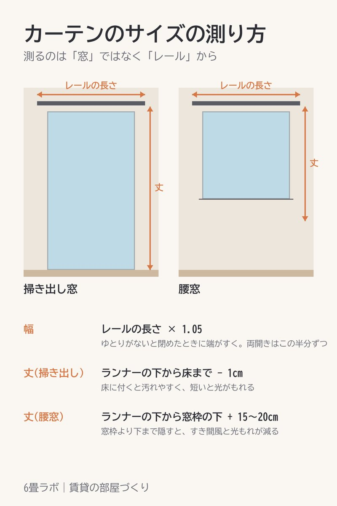

このページには楽天アフィリエイトのリンク(【PR】)が含まれています。

カーテンを買う前に測るのは、窓の大きさではなくカーテンレールです。窓だけ測って買うと、幅が足りずに端がすいたり、丈が短くて光がもれたりします。
レールの両端にある固定ランナー(動かない輪)の間を測り、1.05倍にします。少しゆとりがあると、閉めたときに端がすきません。両開きにするなら、その半分の幅を2枚です。
窓のガラスで冷えた空気は、下へ落ちてきます。丈が短いと、その冷気がカーテンの下から部屋に入りやすくなります。腰窓は少し長めにしておくと、足元の冷えがやわらぎます。
【PR】丈は1cm単位・幅は5cm単位で頼める1級遮光カーテン(日本製・洗える)楽天で見る →